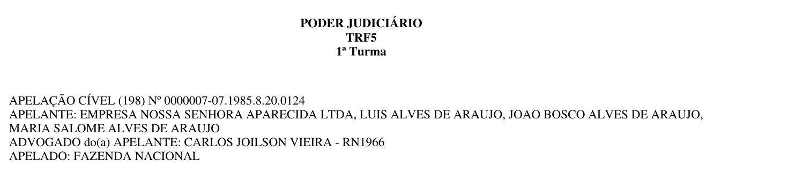

El proyecto recorre todos los procesos de pjett.trf5.jus.br, extrae los
metadatos completos de cada uno y descarga los PDF de sus documentos. Solo axios +
cheerio: sin Puppeteer, sin Playwright, sin Selenium. El portal es JSF 1.2 + RichFaces
sobre JBoss Seam, no navega por URL y no tiene paginación, así que casi todo el diseño sale de
entender su protocolo antes de escribir una línea de scraping.
1985-01-01 .. 2020-06-11 cerrado, 1 día saturado, 5 fallos anotados para reintento.
Todas las capturas de esta guía son salida verbatim de esa corrida o de comandos ejecutados sobre ella.
Si te piden «explícame tu scraper» y tienes un minuto, esto es lo que dices.
onclick es
return executarReCaptcha();;A4J.AJAX.Submit(…): el return corta antes del
submit visible. El submit real es un a4j:jsFunction oculto, executarPesquisa,
cuyo id cambia entre despliegues y se lee de la página en cada sesión.ca
estable, pero los enlaces de sus documentos llevan un hash ligado a la sesión que abrió la ficha.
Por eso cada PDF se descarga partiendo de una ficha recién abierta, nunca de URLs guardadas.| Capa | Responsabilidad | Por qué está separada |
|---|---|---|
http/ | Transporte: cookies, charset, delays, tipado de errores | Todo lo que sabe de la red vive aquí. El resto del código nunca ve un status HTTP crudo, ve un error tipado. |
pje/ | Protocolo del portal: A4J, sesión, parsers, descarga | Es la parte que se rompe si el tribunal cambia el HTML. Aislada y cubierta con fixtures reales. |
crawl/ | Estrategia: qué pedir, en qué orden, cuándo parar | No sabe de HTML ni de HTTP. Solo decide la partición y el orden de enriquecimiento. |
storage/ | Persistencia atómica, índice, estado, fallos | Único punto que toca el disco. Hace posible cortar con Ctrl+C y reanudar sin duplicados. |
util/ | Reintentos, fechas, texto, ids, logger, rename | Funciones puras: es lo que la suite de tests puede fijar sin red. |
detailFetched: false. Si un día sigue saturado tras partir por
clase, se anota en state.json.saturatedDays. Un hueco explícito se reintenta; un hueco
silencioso se convierte en datos incorrectos que nadie detecta.
PS C:\Users\js\Desktop\scraper-challenge> tree /f src src/ ├── index.ts 115 líneas CLI: discover / download / all / retry-failed / status ├── config.ts 107 líneas toda la configuración por variable de entorno ├── types.ts 151 líneas contrato de datos: ProcessRecord, DocumentRecord… ├── http/ │ └── client.ts 214 líneas axios + cookies + charset + delays + tipado de errores ├── pje/ │ ├── a4j.ts 157 líneas protocolo Ajax4jsf: serializar, construir, parchear │ ├── session.ts 203 líneas sesión JSF: abrir, buscar, ficha, páginas de movimentações │ ├── listParser.ts 155 líneas tabla de resultados: 30 filas, tope, segredo de justiça │ ├── detailParser.ts 263 líneas ficha: dados, partes, movimentações, documentos │ └── documents.ts 152 líneas descarga de PDF por dos rutas + validación ├── crawl/ │ ├── discover.ts 233 líneas FASE 1: partición por fechas + medición del total │ └── enrich.ts 265 líneas FASE 2: fichas completas + descargas ├── storage/ │ └── store.ts 460 líneas shards por proceso, índice, estado, fallos, CSV ├── util/ │ ├── retry.ts 147 líneas taxonomía de errores + backoff exponencial │ ├── dates.ts 92 líneas ISO ↔ dd/MM/yyyy, splitRange, aritmética en UTC │ ├── text.ts 60 líneas ids estables, CNJ, nombres de fichero seguros │ ├── fs.ts 30 líneas rename con reintento (bloqueo transitorio de Windows) │ └── logger.ts 55 líneas líneas con marca de tiempo a stdout y a fichero └── __tests__/ 56 tests, 8 suites, sin red ├── fixtures/ landing.html 46 KB · detail-process.html 106 KB │ document-viewer.html 52 KB · search-results.xml 35 KB └── *.test.ts a4j 8 · dates 6 · detailParser 7 · fs 3 · listParser 8 retry 15 · store 4 · text 5
| Fichero | Qué hace y qué tienes que saber decir de él |
|---|---|
| index.ts | Punto de entrada. Elige comando, monta el Store, registra SIGINT/SIGTERM para guardar antes de morir y despacha a Discoverer o Enricher. status no toca la red: imprime el progreso leyendo los ficheros de salida. |
| config.ts | Un solo objeto CONFIG congelado (as const), poblado desde variables de entorno con validación (envInt revienta si le pasas algo que no es un número ≥ 0). Ninguna otra parte del código lee process.env. |
| http/client.ts | Lo que axios no trae: tarro de cookies manual, decodificación por charset, pausa mínima con jitter, y sobre todo classify(), que convierte statuses y páginas de error disfrazadas de 200 en errores tipados antes de que nadie parsee nada. maxRedirects: 0 porque aquí un 302 significa algo. |
| pje/a4j.ts | El protocolo RichFaces en tres funciones: serializeForm (el formulario entero, en orden de documento, como haría el navegador), buildA4jBody (los marcadores que añade A4J) y applyA4jResponse (parchear el documento vivo con los fragmentos que devuelve el servidor). |
| pje/session.ts | La conversación con el portal: open() lee cookies, ViewState y el control de búsqueda oculto; search() hace el POST A4J; getDetail(ca) abre la ficha; getMovementsPage() mueve el slider de movimentações. |
| pje/listParser.ts | Convierte la tabla de resultados en filas. Devuelve además isCapped y overflowBanner: las dos señales que gobiernan la partición. |
| pje/detailParser.ts | Ficha completa. Todo se localiza por sufijo de id ([id$=":processoEvento"]) porque los prefijos j_idNNN cambian entre despliegues. |
| pje/documents.ts | Las dos rutas de descarga y validatePdf(). Escribe .part y renombra solo tras validar. |
| crawl/discover.ts | La estrategia de cobertura: pila de rangos, partición binaria, partición secundaria por clase, medición del total y marcado de días saturados. |
| crawl/enrich.ts | Fase 2. Aísla el fallo por elemento: un documento que agota reintentos no tumba el proceso, y un proceso que falla no tumba la corrida. |
| storage/store.ts | Un fichero JSON por proceso (shard) escrito atómicamente, más un índice ligero. Los shards son la fuente de verdad; el índice se reconstruye desde ellos. |
| util/retry.ts | La taxonomía de errores y withRetry. Es el fichero que más te van a preguntar. |
EPERM/EBUSY.
Toda escritura atómica del scraper termina en un rename, y una fase de descubrimiento de 19 minutos murió
exactamente ahí. El fix es un rename con reintento breve (25 ms, 50 ms, 100 ms…) solo para esos tres
códigos de error; cualquier otro sigue propagándose. Es un ejemplo de «el bug me enseñó dónde estaba el
supuesto equivocado», no de defensa preventiva.
Esta sección responde la pregunta «¿cómo enfrentaste JSF?». Es el corazón técnico del proyecto.
| Pieza | Consecuencia práctica para el scraper |
|---|---|
| JBoss Seam 2 + JSF 1.2 | El estado de la vista vive en el servidor. Cada interacción exige devolver javax.faces.ViewState y el formulario completo. |
| RichFaces / Ajax4jsf 3.3 | No hay navegación por URL: todo es un POST por XHR y la respuesta es un XML que dice qué fragmentos del DOM reemplazar. |
Ids j_id244, j_id561… | Los genera el framework y cambian entre despliegues. Nunca se codifican a mano: se leen de la página o se buscan por sufijo. |
| HTML en ISO-8859-1, XML en UTF-8 | Decodificar con el charset que declara cada respuesta o los acentos de «Movimentações» se corrompen. |
| WAF F5 delante | Sirve una página de bloqueo con HTTP 200. Hay que detectarla por contenido, no por status. |
| reCAPTCHA cargado pero desactivado | Compila a if (false) { grecaptcha.execute() }. No hay captcha que resolver ni que evadir. |
Este es el hallazgo que desbloqueó todo. El onclick del botón visible «Pesquisar» es:
onclick="return executarReCaptcha();;A4J.AJAX.Submit('fPP',…,{'parameters':{'fPP:searchProcessos':…}});return false; ▲ devuelve undefined … y el `return` sale de la función AQUÍ. El A4J.AJAX.Submit que ves nunca llega a ejecutarse. // El submit real es un a4j:jsFunction declarado en otra parte de la página: executarPesquisa=function(){A4J.AJAX.Submit('fPP',null,{…,'parameters':{'fPP:j_id244':'fPP:j_id244'}})};
Enviar fPP:searchProcessos devuelve un 200 perfectamente válido… que solo re-renderiza el
panel de mensajes. Enviar el control del jsFunction renderiza la tabla de resultados. Ese id
cambia entre despliegues, así que findSearchControl() lo extrae de la página en cada apertura
de sesión y cae al botón visible solo si no lo encuentra:
// src/pje/session.ts — findSearchControl() const at = html.indexOf('executarPesquisa=function'); if (at >= 0) { const pairs = parseA4jParameters(html.slice(at, at + 1200)); const own = pairs.find(([k, v]) => k === v); // el control se nombra a sí mismo if (own) return own; }
El punto 6 es la idea clave: el scraper mantiene un documento cheerio vivo y lo parchea igual que haría el navegador. Sin eso, la segunda búsqueda enviaría un ViewState caducado.
search() exige que los ids actualizados incluyan processosGridPanel o
processosTable; si no, lanza UnexpectedStructureError con el mensaje del portal.
JSESSIONID,
ROUTER_ID y dos del WAF (trf50…).Cookie: solo se envía si hay algo que enviar: una cabecera
Cookie: vacía es uno de los disparadores del bloqueo del WAF.SESSION_MAX_REQUESTS (400 peticiones) antes de que el portal
la tire él.ViewExpiredException en el XML → SessionExpiredError → se reabre sesión y
se reintenta.open() pone this.$ = undefined antes de resetear las cookies: si la
reapertura falla, la sesión queda cerrada. Dejar el documento viejo haría que el siguiente intento
enviara un ViewState antiguo sin cookies.min(total, 30) resultados encontrados, así que el número que ves nunca pasa de 30.<div title="Paginação">) se renderiza vacío siempre.
No hay «página 2» que pedir.Conclusión: «navegar por todas las páginas del sitio» no se puede hacer paginando. Se hace particionando el espacio de búsqueda hasta que cada partición cabe bajo el tope.
31/02/2000, pasa
la validación y el conversor de JSF la descarta: la consulta corre sin filtro y el pie anuncia el
total real del corpus. Es una sola petición, se lanza antes de guardar nada y sus filas
no se ingieren: solo se lee el número. Medición en frío, coste 1 petición: 106.763 procesos.
// src/crawl/discover.ts — measureTotal(): se ejecuta al principio de run(), antes del primer rango const page = await this.session.search({ dateFrom: '31/02/2000', dateTo: '31/02/2000' }); if (page.announcedTotal > CONFIG.resultCap) { this.store.setMeasuredTotal(page.announcedTotal); // solo el número. Ninguna fila se almacena. log.info(`portal total: ${page.announcedTotal} processes (unfiltered count)`); }
El total se cachea en state.json con su marca de tiempo y se vuelve a medir si tiene más de
24 horas. npm run status lo contrasta contra lo descubierto: por eso el progreso se lee como
10062 of 106763 announced by the portal y no como un porcentaje inventado.
[2026-08-26T05:19:08.746Z + 3.9s] INFO command=all base=https://pjett.trf5.jus.br output=…\output [2026-08-26T05:19:08.917Z + 4.1s] INFO discovery window 1990-01-01..1994-12-31 (1826 days), result cap 30 [2026-08-26T05:19:12.213Z + 7.4s] INFO session opened: cookies=[JSESSIONID, ROUTER_ID, trf501ad1ee3, trf501f66e06] viewState=j_id1 searchControl=fPP:j_id244 [2026-08-26T05:19:13.644Z + 8.8s] INFO portal total: 106763 processes (unfiltered count) [2026-08-26T05:19:14.827Z + 10.0s] INFO search 1990-01-01..1994-12-31: 7 rows (7 new) | total stored 7
searchControl=fPP:j_id244: el id oculto leído de la página, no codificado a mano.splitRange parte el rango por la mitad en días.
Se adapta sola a la densidad: 1986–2004 caben por año (147 procesos en total), 2005–2026 bajan hasta
mes/semana/día.push(b, a) para que pop() saque primero
la mitad temprana; el log se lee en orden y es reanudable de forma intuitiva.state.json.saturatedDays con una nota. Es cobertura parcial declarada.+ 2.9s INFO search 1985-01-01..2026-08-26: 30 rows (25 new) CAPPED -> split | total stored 32 + 4.4s INFO search 1985-01-01..2005-10-28: 30 rows (19 new) CAPPED -> split | total stored 51 + 6.5s INFO search 1995-06-01..2005-10-28: 30 rows (11 new) CAPPED -> split | total stored 62 + 7.6s INFO search 1995-06-01..2000-08-13: 30 rows ( 0 new) CAPPED -> split | total stored 62 + 9.9s INFO search 1998-01-06..2000-08-13: 30 rows (24 new) CAPPED -> split | total stored 86 + 13.2s INFO search 2000-08-14..2005-10-28: 30 rows (30 new) CAPPED -> split | total stored 118
(0 new) de la cuarta línea es normal: los rangos se solapan durante el descenso y el índice deduplica por id.+1086.4s INFO search 2019-12-20..2019-12-20: 30 rows (8 new) CAPPED -> split | total stored 8764 +1086.4s WARN day 2019-12-20 is capped at 30: splitting by 5 class name(s) seen in the capped response +1086.9s INFO search 2019-12-20..2019-12-20 class="APELAÇÃO / REMESSA NECESSÁRIA": 10 rows (0 new) +1087.8s INFO search 2019-12-20..2019-12-20 class="APELAÇÃO CRIMINAL": 2 rows (0 new) +1088.8s INFO search 2019-12-20..2019-12-20 class="APELAÇÃO CÍVEL": 19 rows (3 new) +1089.5s INFO search 2019-12-20..2019-12-20 class="AGRAVO REGIMENTAL CÍVEL": 1 rows (0 new) +1090.3s INFO search 2019-12-20..2019-12-20 class="CUMPRIMENTO DE SENTENÇA": 1 rows (0 new) +1091.4s INFO search 2019-12-21..2019-12-21: 11 rows (3 new) | total stored 8770
isCapped (llegó al tope, hay que investigar) de
overflowBanner (el portal dijo textualmente «somente os 30 primeiros serão exibidos»).
Solo el banner es prueba de que se ocultaron filas, y solo el banner marca el día como saturado.
| Sección de la ficha | Cómo se localiza | Notas |
|---|---|---|
| Dados do Processo | .propertyView → pares .name/.value | Se guarda tal cual, con las etiquetas del portal como claves. |
| Polo ativo / passivo / outros | table[id$=":processoPartesPoloAtivoResumidoList"] y hermanas | Los abogados van indentados: se detectan por ausencia de span.text-bold → isRepresentative. |
| Movimentações | table[id$=":processoEvento"] | 15 por página. Se paginan todas con el slider (ver 5.2). |
| Documentos | table[id$=":processoDocumentoGridTab"] | Cada fila publica su ruta de descarga (binaria o visor). |
Las movimentações se paginan con un rich:inputNumberSlider que vive en su propio
formulario y en su propia región Ajax. El scraper lee del JavaScript inline el número de páginas
('maxValue'), el control que dispara el onchange y el containerId:
// detailParser.ts — findMovementsPager() lee esto del HTML: new Richfaces.Slider("X:j_id561:j_id562",{'minValue':'1','maxValue':'7',… 'onchange':'A4J.AJAX.Submit(\'X:j_id561\',event,{…\'containerId\':\'X:j_id474\',' '\'parameters\':{\'X:j_id561:j_id563\':\'X:j_id561:j_id563\'}})'}) // session.ts — getMovementsPage(): el cuerpo del POST para la página N const body = buildA4jBody($detail, { formId: pager.formId, control: pager.control }, [[pager.pageField, String(page)]]); if (pager.containerId) body[0] = ['AJAXREQUEST', pager.containerId];
Verificado en la corrida real con historiales de 90, 282, 343 y 597 movimentações, todos completos.
detailFetched: false y una entrada en failed.json que dice
movements truncated: 120 of 282 collected. La siguiente corrida lo rehace. Marcarlo como
completo sería registrar un historial parcial como si fuera el historial entero: el peor error posible
en datos judiciales.
retry-failed en vez de
reintentarse en cada reanudación: si no, cada arranque paga el calendario completo de backoff por un
proceso que probablemente sigue roto.+ 2.1s INFO detail BR-TRF5-0000121-52.2012.4.05.8303: 2 parties, 158/158 movements, 8 documents + 2.9s INFO detail BR-TRF5-0000122-42.2009.4.05.8400: 4 parties, 78/78 movements, 2 documents + 4.1s INFO detail BR-TRF5-0000122-75.2014.4.05.8106: 9 parties, 343/343 movements, 10 documents + 9.9s INFO detail BR-TRF5-0000122-88.1990.8.15.0351: 4 parties, 156/156 movements, 13 documents + 30.6s INFO detail BR-TRF5-0000123-60.2009.4.05.8001: 12 parties, 597/597 movements, 15 documents + 36.8s INFO detail BR-TRF5-0000125-91.2009.4.05.8401: 12 parties, 175/175 movements, 10 documents + 52.6s INFO detail BR-TRF5-0000130-84.2016.4.05.8202: 18 parties, 307/307 movements, 15 documents + 78.1s INFO detail BR-TRF5-0000134-78.2017.4.05.8108: 12 parties, 410/410 movements, 15 documents
597/597 significa recogidas / anunciadas por el portal. El proceso de 597 movimentações tardó ~20 s: son 39 POST del slider a ~0,7 s cada uno más la ficha. Ritmo observado: ~6,7 s por ficha completa.{
"id": "BR-TRF5-0006273-97.1992.4.05.0000", // PAIS-FUENTE-clave única de la fuente
"source": "BR-TRF5",
"number": "0006273-97.1992.4.05.0000", // número CNJ
"ca": "8a8adae773b623ea…", // hash de acceso a la ficha (48 hex, estable)
"className": "CUMPRIMENTO DE SENTENÇA CONTRA A FAZENDA PÚBLICA",
"distributionDate": "1992-05-26",
"details": { "Número Processo": …, "Jurisdição": "TRF5", … },
"parties": [ { "pole":"ATIVO", "name":"CLEONICE MARINHO DE ANDRADE (ESPÓLIO)",
"role":"REQUERENTE", "isRepresentative":false },
{ …, "role":"ADVOGADO", "document":"OAB MS4120-B - CPF: 048.769.891-68",
"isRepresentative":true } ], // 18 partes en total
"movementsTotal": 282, "movements": [ … ], // 282/282 recogidas
"documents": [ { "id":"…-DOC-6052946", "idBin":"5989146", "title":"Despacho",
"download":"binary", "status":"downloaded",
"file":"pdfs\\…_6052946_2025-08-15_Despacho.pdf", "bytes":20051 } ],
"detailFetched": true,
"firstSeenAt": "2026-08-26T05:19:14.636Z", "updatedAt": "2026-08-26T05:42:38.702Z"
}
Qué ruta usa cada documento lo dice la propia fila: si trae href con
setDownloadInstance es binaria; si trae documentoSemLoginHTML.seam es visor; si no
trae ninguna, se registra como no disponible y no como fallo.
ca de la ficha (48 hex) es estable entre sesiones — verificado
abriéndolo en una sesión virgen. El hash ca de un documento (96 hex) está
ligado a la sesión que abrió la ficha: reutilizarlo en otra sesión da 302. Por eso el descargador
nunca usa URLs guardadas: cada PDF parte de una ficha recién abierta en la misma sesión. Y si un intento
falla por sesión, el reintento vuelve a leer los enlaces de una ficha nueva antes de repetir.
// src/pje/documents.ts export function validatePdf(res: HttpResponse): void { if (res.status !== 200) throw new InvalidDownloadError(`HTTP ${res.status} instead of a PDF`); const magic = res.body.subarray(0, 5).toString('latin1'); // ← bytes mágicos if (magic !== '%PDF-') { const kind = /text\/html/i.test(res.contentType) ? 'an HTML page' : `content-type ${res.contentType}`; throw new InvalidDownloadError(`server returned ${kind} instead of a PDF (${res.body.length} B)`); } if (res.body.length < MIN_PDF_BYTES) throw new InvalidDownloadError(`PDF too small`); // 200 B } // y la escritura, solo DESPUÉS de validar: fs.writeFileSync(`${target}.part`, res.body); renameSyncWithRetry(`${target}.part`, target); // rename atómico
Tres comprobaciones independientes: status, firma %PDF- en los primeros 5 bytes
y tamaño mínimo. El content-type se usa para redactar el error, no para decidir: un servidor puede
mentir en la cabecera, los bytes no. Y el fichero se escribe como .part y se renombra solo al
final, así que una caída nunca deja medio PDF con aspecto de PDF completo.
PS> find output/pdfs -name "*.pdf" | wc -l 11 PS> for f in $(find output/pdfs -name "*.pdf"); do printf "%-6s %8s B %s\n" "$(head -c 5 $f)" "$(stat -c%s $f)" "$(basename $f)"; done %PDF- 3487 B BR-TRF5-0000005-48.2009.4.05.8401_11788020_2026-07-31_Despacho.pdf %PDF- 61197 B BR-TRF5-0000007-07.1985.8.20.0124_3469065_2025-10-27_Acordao.pdf %PDF- 36044 B BR-TRF5-0000007-07.1985.8.20.0124_7222997_2026-05-11_Acordao.pdf %PDF- 20032 B BR-TRF5-0003216-56.1994.4.05.8001_7907537_2020-10-18_Despacho.pdf %PDF- 20152 B BR-TRF5-0003216-56.1994.4.05.8001_7907550_2021-01-20_Decisao.pdf %PDF- 245706 B BR-TRF5-0006273-97.1992.4.05.0000_6052692_2023-06-30_CUMSENFA8-RN_027_AR…pdf %PDF- 123563 B BR-TRF5-0006273-97.1992.4.05.0000_6052700_2023-06-30_CUMSENFA8-RN_055_Des…pdf %PDF- 21562 B BR-TRF5-0006273-97.1992.4.05.0000_6052785_2023-09-15_Decisao.pdf
%PDF-. La comprobación de la terminal es exactamente la que hace validatePdf() en tiempo de ejecución.output/pdfs/<idProceso>/<idProceso>_<idDocumento>_<fecha>_<título>.pdf BR-TRF5-0006273-97.1992.4.05.0000_6052785_2023-09-15_Decisao.pdf └──── proceso ────────────────────┘ └─doc──┘ └──fecha─┘ └título┘
safeFileName() quita acentos (NFD + eliminación de diacríticos), deja solo
[A-Za-z0-9._-] y acota la longitud, así que el mismo nombre funciona en Windows, macOS y Linux.
Es descriptivo (se sabe qué es sin abrirlo) y estable (el mismo documento produce siempre el
mismo nombre, lo que permite saltarse la descarga si ya existe con tamaño válido).
El fichero más preguntado del proyecto: src/util/retry.ts, 147 líneas, 15 tests.
| Señal | Tipo | Reacción |
|---|---|---|
429 | HttpRetryableError | Backoff exponencial con jitter; si viene Retry-After, manda el servidor. |
500 502 503 504 408 | HttpRetryableError | Igual que el 429. |
Cortes de red (ECONNRESET, ETIMEDOUT…) | código de error de Node | Reintento con backoff. |
200 + «Requisição - Rejeitada» | WafBlockedError | Pausa de 90 s y sesión nueva. Reintentar rápido convierte un bloqueo blando en uno duro. |
302 → errorUnexpected.seam | HttpRetryableError(503) | Pausa de 5 s y reintento sin reabrir sesión (la sesión está bien, el servidor no). |
ViewExpiredException / 302 a la portada | SessionExpiredError | Reabrir sesión y repetir. |
| HTML donde iba un PDF | InvalidDownloadError | No se guarda basura con extensión .pdf; se anota y se sigue. |
| Página con estructura desconocida | UnexpectedStructureError | Nunca se reintenta: el HTML no va a cambiar por insistir. |
403 / 404 | HttpFatalError | Fatal. El servidor ya dijo que no; repetir solo añade carga. |
// src/util/retry.ts export function backoffMs(attempt: number, err?: unknown): number { // 1. Una instrucción explícita del servidor manda por encima del calendario propio. if (err instanceof HttpRetryableError && err.retryAfterMs !== undefined) return Math.min(err.retryAfterMs, RETRY_AFTER_HARD_CAP_MS); // tope de cordura: 15 min // 2. El WAF tiene su propia pausa, mucho más larga. if (err instanceof WafBlockedError) return CONFIG.retry.wafCooldownMs; // 90 s // 3. Exponencial con FULL JITTER: base·2^(n-1), con techo, y luego la mitad + azar. const exp = CONFIG.retry.baseDelayMs * 2 ** Math.max(0, attempt - 1); // 2s, 4s, 8s… const capped = Math.min(exp, CONFIG.retry.maxDelayMs); // techo 120 s return Math.round(capped / 2 + Math.random() * (capped / 2)); // jitter }
El jitter no es decorativo: sin él, varios elementos que fallan a la vez reintentan a la vez y golpean
el servidor en el mismo instante. Con jitter completo cada espera cae en [capped/2, capped],
así que los reintentos se dispersan.
for (let attempt = 1; attempt <= max; attempt++) { try { return await fn(attempt); } catch (err) { lastErr = err; // se sale si el error no es reintentable, si el llamante lo veta, o si era el último intento if (!isRetryable(err) || (opts.retryIf && !opts.retryIf(err)) || attempt === max) break; await sleep(backoffMs(attempt, err)); if (opts.onRetry) { try { await opts.onRetry(err, attempt + 1); } catch (hookErr) { // El hook de recuperación hace red (reabrir sesión) y puede caer él mismo en el // throttle. Eso debe consumir el presupuesto de ESTE reintento, no abortar el bucle // ni atribuir mal el fallo. Su propio Retry-After / cooldown se respeta antes de seguir. await sleep(backoffMs(attempt, hookErr)); } } } } throw lastErr; // el llamante lo anota en failed.json y continúa con el siguiente
onRetry reabre la sesión solo si el error es de sesión o del WAF: un 429
corriente no debe costar una petición extra a la portada de un servidor que ya está saturado.withRetry. Un proceso roto no consume los intentos de los demás.retryIf permite vetos locales. En la paginación de movimentações se veta el
reintento ante SessionExpiredError: las páginas siguientes necesitan justamente el ViewState
que acaba de morir, así que reintentar sobre el mismo documento es tirar peticiones.
output/failed.json con clave, fase, motivo, número de intentos
acumulado entre corridas, marca de tiempo y status HTTP.try/catch
por ficha y por documento.clearFailure), así que
failed.json refleja lo que sigue roto, no el historial.npm run retry-failed reprocesa solo esas claves.processes.json tras cada proceso es O(n²) de E/S, y su forma serializada supera el
tamaño máximo de string de Node mucho antes de terminar el corpus. No es una preferencia de estilo: el
monolito no puede funcionar a esta escala.
| Fichero | ¿Reconstruible? | Papel |
|---|---|---|
processes/<id>.json | — es la fuente de verdad | Un fichero por proceso, escrito atómicamente en el momento en que el registro cambia. O(1) por actualización. |
index.json | Sí, desde los shards | Índice ligero para dedupe, iteración y progreso. Se vacía a disco cada 60 s / 500 actualizaciones, no en cada cambio. |
state.json | No | Rangos completados, días saturados, total medido. Es el punto de reanudación. |
failed.json | No | Qué falló, por qué y cuántas veces. |
processes.csv / documents.csv | Sí | Exportación tabular UTF-8 con BOM (Excel conserva los acentos). |
Lo no reconstruible se trata distinto: si state.json existe pero no se puede leer, se
aparta con marca de tiempo y la corrida aborta. Empezar de cero en silencio perdería primero el
punto de reanudación y después sobrescribiría la evidencia.
Ese reconcileShards() es la red de seguridad para el caso feo: matar el proceso sin SIGINT.
Sin él, los procesos escritos en los últimos 60 segundos serían invisibles para la fase 2, para el CSV y
para status — aunque su fichero estuviera perfectamente en disco.
Los rangos se solapan durante el descenso binario, así que el mismo proceso se lista muchas veces.
El upsert por id resuelve todos los casos:
const existing = this.get(record.id); merged = existing ? { ...existing, ...stripUndefined(record), // lo nuevo definido gana… documents: mergeDocuments(existing.documents, record.documents), firstSeenAt: existing.firstSeenAt, // …pero la 1ª vez no se pierde updatedAt: now } : { ...record, firstSeenAt: record.firstSeenAt || now, updatedAt: now }; return !existing; // true solo si era nuevo → "(N new)" del log
storeRow() conserva
detailFetched y foundInRange del registro existente. Si no, cada solape
forzaría volver a bajar la ficha entera.mergeDocuments mantiene
downloaded + file + bytes aunque el nuevo registro venga como
pending, y un éxito borra el error de un fallo anterior.get() lee del disco aunque el índice en memoria
no conozca el id, y de paso cura el índice. Así un índice desactualizado nunca provoca que se
sobrescriba un shard en lugar de fusionarlo.npm run status lee index.json, que se vacía a disco cada 60 s / 500
actualizaciones. Ejecutado desde otro proceso mientras la corrida está viva, sus contadores por
proceso pueden ir por detrás de los shards: en la captura de esta guía informa de 8 PDF descargados
cuando en disco ya hay 11. Los datos están completos; el resumen es el que va atrasado.
reconcileShards() hoy solo añade procesos que faltan, no refresca los contadores de los que
ya conoce.
Todo lo de esta sección es salida verbatim, capturada el 2026-08-26 sobre la corrida en curso. Son la evidencia que respalda cada respuesta de la sección 10.
PS C:\Users\js\Desktop\scraper-challenge> npm run status > scraper-challenge@1.0.0 status > ts-node src/index.ts status [2026-08-26T06:13:38.105Z + 0.4s] INFO command=status base=https://pjett.trf5.jus.br output=C:\Users\js\Desktop\scraper-challenge\output attempts=3 processes discovered : 10062 of 106763 announced by the portal details fetched : 123 documents : 1101 (downloaded 8, pending 1093, failed 0, unavailable 0) completed ranges : 1 (1985-01-01 .. 2020-06-11) saturated days : 1 failures to retry : 5
PS C:\Users\js\Desktop\scraper-challenge> npm test > scraper-challenge@1.0.0 test > jest […] WARN test: attempt 1/3 failed (HTTP 429): HTTP 429 -> waiting 1s […] WARN test: attempt 2/3 failed (HTTP 429): HTTP 429 -> waiting 3s […] WARN test: attempt 1/3 failed (HTTP 429): HTTP 429 -> waiting 30s ← Retry-After manda […] WARN test: attempt 1/5 failed (HTTP 503): HTTP 503 -> waiting 1s […] WARN test: attempt 2/5 failed (HTTP 503): HTTP 503 -> waiting 2s […] WARN test: attempt 3/5 failed (HTTP 503): HTTP 503 -> waiting 4s ← exponencial con jitter […] WARN test: attempt 1/3 failed: The JSF session or view state expired -> waiting 2s […] WARN test: recovery before attempt 2 failed too: HTTP 429 -> waiting 1s ← el hook también falla Test Suites: 8 passed, 8 total Tests: 56 passed, 56 total Snapshots: 0 total Time: 9.297 s Ran all test suites.
PS C:\Users\js\Desktop\scraper-challenge> npm run typecheck > scraper-challenge@1.0.0 typecheck > tsc --noEmit && tsc --noEmit -p tsconfig.test.json (sin salida = sin errores)
strict, con noUncheckedIndexedAccess y noImplicitOverride. Se comprueban también los tests, que usan un tsconfig propio.[05:19:21.641Z + 16.8s] WARN detail BR-TRF5-0006051-07.1991.4.05.8200: attempt 1/5 failed (HTTP 503): portal error page (errorUnexpected) for detail ?ca=77b2370dc7ad… -> waiting 20s [05:19:42.242Z + 37.4s] WARN detail BR-TRF5-0006051-07.1991.4.05.8200: attempt 2/5 failed (HTTP 503): portal error page (errorUnexpected) … -> waiting 20s [05:20:02.768Z + 57.9s] WARN detail BR-TRF5-0006051-07.1991.4.05.8200: attempt 3/5 failed (HTTP 503): portal error page (errorUnexpected) … -> waiting 20s [05:20:23.334Z + 78.5s] WARN detail BR-TRF5-0006051-07.1991.4.05.8200: attempt 4/5 failed (HTTP 503): portal error page (errorUnexpected) … -> waiting 20s [05:20:43.858Z + 99.0s] ERROR detail BR-TRF5-0006051-07.1991.4.05.8200 failed permanently: portal error page (errorUnexpected) for detail ?ca=77b2370dc7ad… ↑ 5 intentos, 99 s de reloj. La corrida NO se detuvo: siguió con el proceso siguiente. — tras bajar MAX_ATTEMPTS de 5 a 3 (la pausa sigue en 20 s: el proceso vivo arrancó antes de ese cambio) — [05:56:00.639Z + 1.6s] WARN detail BR-TRF5-0000017-65.2018.4.05.8201: attempt 1/3 failed (HTTP 503): portal error page (errorUnexpected) … -> waiting 20s [05:56:21.341Z + 22.3s] WARN detail BR-TRF5-0000017-65.2018.4.05.8201: attempt 2/3 failed (HTTP 503): portal error page (errorUnexpected) … -> waiting 20s [05:56:42.115Z + 43.0s] ERROR detail BR-TRF5-0000017-65.2018.4.05.8201 failed permanently: portal error page (errorUnexpected) …
errorUnexpected también se bajó de 20 s a 5 s, pero eso solo se ve en las líneas de un proceso arrancado después del cambio: el de la captura sigue con 20 s. Ver pregunta 1 de la sección 10.{
"BR-TRF5-0000017-65.2018.4.05.8201": {
"key": "BR-TRF5-0000017-65.2018.4.05.8201",
"stage": "detail",
"reason": "portal error page (errorUnexpected) for detail ?ca=ae6734c4ec53…",
"attempts": 2, ← acumulado ENTRE corridas, no dentro de una
"lastAttemptAt": "2026-08-26T05:56:42.115Z",
"httpStatus": 503
},
… 4 entradas más, todas errorUnexpected en la misma fase …
}
npm run retry-failed. Un éxito posterior borra la entrada.+107.3s INFO PDF pdfs\BR-TRF5-0006273-97.1992.4.05.0000\…_6052785_2023-09-15_Decisao.pdf (21562 B) +108.9s INFO PDF pdfs\BR-TRF5-0006273-97.1992.4.05.0000\…_6052808_2023-06-30_CUMSENFA8-RN_077_Inteiro_Teor_do_Acordao…pdf (232371 B) +110.0s INFO PDF pdfs\BR-TRF5-0006273-97.1992.4.05.0000\…_6052692_2023-06-30_CUMSENFA8-RN_027_AR_ref._of._2465…pdf (245706 B) +111.3s INFO PDF pdfs\BR-TRF5-0006273-97.1992.4.05.0000\…_6052700_2023-06-30_CUMSENFA8-RN_055_Despacho_-_Oficio…pdf (123563 B)
{
"completedRanges": [ { "from": "1985-01-01", "to": "2020-06-11" } ],
"saturatedDays": [ {
"day": "2019-12-20", "classSplitDone": true,
"note": "all classes seen in the response are covered; classes hidden past the cap cannot be queried"
} ],
"updatedAt": "2026-08-26T05:44:15.034Z",
"measuredTotal": 106763,
"measuredAt": "2026-08-26T05:19:13.644Z"
}
mergeRanges() coalesce los adyacentes, así que el estado no crece sin control. El día saturado queda documentado con su motivo.Cada pregunta trae respuesta corta (lo que dices en 20 segundos) y sustento (lo que sacas si te piden detalle). Las preguntas 1 a 7 son las que ya sabes que van a caer.
Retry-After del servidor manda siempre, el bloqueo del WAF tiene una pausa fija de 90 s y
la página de error del portal tiene 5 s. Y los números no son por defecto: los bajé con la evidencia
de la corrida.withRetry. Un proceso roto no consume los intentos de los demás.base · 2^(n-1) con techo, y luego jitter completo
(capped/2 + azar·capped/2). Sin jitter, todo lo que falla junto reintenta junto.Retry-After,
con tope de cordura de 15 min) > pausa específica del tipo de bloqueo > curva exponencial.errorUnexpected.seam. Al medirlo vi que ese error es determinista por proceso:
el mismo 302 en sesión nueva 15 minutos después, con los procesos vecinos funcionando. No es rate
limiting, es un proceso que ese endpoint no sabe servir. Con 5 intentos × 20 s, cada proceso roto
bloqueaba 99 s de reloj para nada. Lo bajé a 3 intentos (efecto ya medido: 43 s en vez de
99 s) y la pausa de 20 s a 5 s, que sigue cubriendo un agotamiento de pool genuinamente
transitorio. El 429 conserva su curva completa, que es donde la espera larga sí sirve.failed.json con el contador acumulado
entre corridas y la corrida sigue. npm run retry-failed los reprocesa después.evidencia Captura 10: la misma ficha, 5 intentos / 99 s antes, 3 intentos / 43 s después.
tests retry.test.ts fija el calendario, el Retry-After, el techo y el agotamiento.
| Cómo está rota | Qué aplico |
|---|---|
| Sobrecargada (429, 5xx, corte de red) | Esperar. Backoff exponencial, Retry-After si lo manda. |
| Me bloqueó el WAF (200 disfrazado) | Pausa larga de 90 s + sesión nueva. Insistir rápido convierte el bloqueo blando en duro. |
| Sesión/vista caducada | Reabrir sesión y repetir. Es recuperable y barato. |
Un proceso concreto que el portal no sabe servir (errorUnexpected.seam) | 3 intentos cortos, luego failed.json y seguir. Insistir no lo arregla. |
| Me devuelve HTML donde iba un PDF | No guardar nada. InvalidDownloadError → el documento queda failed, no queda un .pdf corrupto en disco. |
| 404 / 403 | Fatal, sin reintento. El servidor ya respondió. |
| Cambió el HTML y el parser no reconoce la página | UnexpectedStructureError, nunca reintentado, con el detalle en el mensaje. Es un fallo de código, no de red: reintentar solo oculta el problema. |
| Respondió, pero con un mensaje en vez de resultados | El rango no se marca completado y se anota. Es el caso más peligroso: un 200 perfectamente válido que dejaría un hueco permanente. |
| Un día tiene más procesos de los que la interfaz deja ver | state.json.saturatedDays con la nota del motivo: cobertura parcial declarada. |
Mi propio estado está corrupto (state.json ilegible) | Apartarlo con marca de tiempo y abortar. Empezar de cero en silencio perdería el punto de reanudación y luego sobrescribiría la evidencia. |
El principio: un hueco explícito se puede reintentar; un hueco silencioso se convierte en datos incorrectos que nadie detecta. Todo el diseño de errores sale de ahí.
min(total, 30). El paginador se renderiza vacío. Preguntando de forma
normal nunca ves más de «30 resultados encontrados».31/02/2000,
pasa la validación de «al menos un criterio» y el conversor de JSF la descarta. La consulta corre
sin filtro y el pie anuncia el total real del corpus.state.json con su marca de tiempo y solo se
vuelve a medir si tiene más de 24 horas.npm run status dice
10062 of 106763 announced by the portal. Sin él, «llevo 10.000» no significa nada.state.json.completedRanges, que es el
registro de qué intervalos de fecha se cerraron por debajo del tope, más
saturatedDays, que es la lista explícita de dónde la interfaz pública no deja llegar.
El total medido es el contraste, no la prueba.
%PDF- en los primeros bytes, tamaño mínimo) y escribo a
.part antes de renombrar. Y sí: recorrí el portal a mano petición por petición antes de
escribir el scraper — el protocolo está documentado en docs/protocolo.md y las respuestas
reales están versionadas como fixtures de los tests.application/pdf y
devolver una página de error. Los bytes no mienten: compruebo %PDF- en los primeros 5.
El content-type solo lo uso para redactar un error legible..part + rename. Una caída a mitad de escritura nunca deja un
fichero con extensión .pdf y contenido incompleto. El rename es atómico.status: "failed" con el motivo y se anota en
failed.json. Nunca se guarda basura con extensión de PDF.evidencia Captura 6: los 11 PDF en disco empiezan por %PDF-, entre 3 KB y 245 KB.
docs/protocolo.md: cuerpos de POST, cabeceras, redirecciones y respuestas.
Lo no verificado está marcado como tal — por ejemplo reportPDF.seam («Imprimir»,
expediente completo), que devolvió 302 en las dos rutas probadas y por eso no se usa.ca de una ficha en
una sesión virgen para comprobar que es estable, y el hash de un documento en otra sesión
para comprobar que no lo es (da 302). De ahí sale la regla de descargar siempre desde una
ficha recién abierta.landing.html (46 KB),
detail-process.html (106 KB), document-viewer.html (52 KB) y
search-results.xml (35 KB). No son HTML inventado para que el test pase.SAVE_RAW=1 guarda cada respuesta cruda en output/raw/: es la
herramienta con la que se hizo esa exploración y sigue disponible para diagnosticar.ViewState vigente, y la respuesta es un XML que dice qué fragmentos del DOM
reemplazar. Así que mantengo un documento vivo en memoria y lo parcheo igual que haría el
navegador.| Obstáculo | Solución |
|---|---|
| No hay URL a la que ir | POST de todo el formulario fPP serializado en orden de documento, más AJAXREQUEST=_viewRoot, el control «pulsado» y AJAX:EVENTS_COUNT=1. |
| El estado vive en el servidor | javax.faces.ViewState se lee de la página, viaja en cada POST y se refresca desde #ajax-view-state de cada respuesta. Si expira: SessionExpiredError → sesión nueva. |
| La respuesta no es una página | Es XML A4J con <meta name="Ajax-Update-Ids">. applyA4jResponse() reemplaza esos ids en el documento vivo (cheerio). |
Los ids j_id244 cambian entre despliegues | Nada se localiza por id completo: todo por sufijo ([id$=":processoEvento"]) y los ids concretos se leen del HTML en tiempo de ejecución. |
| El botón visible no dispara la búsqueda | Su onclick es return executarReCaptcha();;A4J.AJAX.Submit(…): el return corta antes. El submit real es el a4j:jsFunction executarPesquisa, cuyo control se extrae de la página en cada sesión. |
Extras del mismo mundo: HTML en ISO-8859-1 y XML en UTF-8 (decodificación por charset
declarado); tarro de cookies a mano porque Node no trae uno; y la paginación de movimentações, que es
un rich:inputNumberSlider con su propio formulario y su propia región Ajax
(containerId), no un paginador.
if (false): no hay captcha que resolver
ni que evadir. Lo difícil de este portal no era la protección, era el protocolo.»
PAÍS-FUENTE-<clave única de la fuente> →
BR-TRF5-0800041-77.2020.4.05.8302. La clave es el número CNJ, que ya es único a
nivel nacional y lo asigna el propio poder judicial; no invento un id, adopto el que la fuente ya
garantiza. Y no dependo de que no colisione: el almacenamiento fusiona por id en vez de
sobrescribir.BR-TRF5 es la fuente donde se
extrajo, no el tribunal que emitió el número. En el corpus hay procesos cuyo CNJ pertenece a
tribunales estaduales (…8.15.0351 es TJPB, …8.20.0124 es TJRN) y aun así
se listan en la consulta del TRF5. Si mañana se raspa otro tribunal, sus registros no chocan con
estos, y que el mismo caso aparezca en dos fuentes es información, no un duplicado.<id del proceso>-DOC-<idProcessoDocumento>,
usando el id interno del portal.Los procesos en segredo de justiça se listan sin número. En vez de saltarlos o de inventar un
id, uso la clave con la que el propio portal los abre: BR-TRF5-ca-<hash 48 hex>,
verificado estable entre sesiones. Se pierde la legibilidad, no la identidad.
upsert() lee el registro existente y
fusiona. Los campos nuevos definidos ganan, pero firstSeenAt se conserva, los
documentos se fusionan por su propio id y una descarga completada nunca se degrada a
pendiente.ca permitiría detectarlo. No lo he observado en la
muestra y hoy no está resuelto.output/processes/, más index.json.30 rows (0 new). upsert() devuelve
false y el contador de «nuevos» no se mueve.detailFetched y
foundInRange del registro existente. Si no, cada solape forzaría volver a bajar la
ficha completa.get() lee del disco aunque el índice en
memoria no conozca el id. Así un índice atrasado nunca provoca que se sobrescriba un shard en vez
de fusionarlo.tests store.test.ts fija que una descarga completada nunca se degrada y que un
éxito posterior borra el error anterior. text.test.ts fija la construcción de los ids.
src/util/retry.ts. Tres piezas: una taxonomía (isRetryable), una
política (backoffMs) y un bucle (withRetry). El resto del
código no decide si reintentar: solo etiqueta el error y pasa un label y un hook de
recuperación.| Llamada | Hook de recuperación | Particularidad |
|---|---|---|
search <rango> | reabrir sesión solo si SessionExpiredError o WafBlockedError | La sesión se recicla también si superó las 400 peticiones. |
detail <id> | igual | Al agotarse, el proceso se deja para retry-failed y no se reintenta en cada reanudación. |
document <id> | igual, y además relee los enlaces de una ficha nueva antes de repetir | Los enlaces de documento caducan con la sesión: reintentar con el enlace viejo está condenado. |
movements p<N> | — | retryIf veta el reintento ante sesión expirada: la página N necesita el ViewState que acaba de morir. |
Es la parte más testeada del proyecto: 15 de los 56 tests están en
retry.test.ts, con timers falsos para que las esperas de segundos se completen al
instante. Cubren clasificación, calendario exponencial, Retry-After, techo, agotamiento y
el caso del hook de recuperación que falla él mismo.
classify() convierte 429/5xx/408 en HttpRetryableError con el
Retry-After ya parseado. De ahí en adelante nadie vuelve a mirar un status.parseRetryAfter() entiende las dos formas del estándar: segundos
(Retry-After: 120) y fecha HTTP.errorUnexpected.seam, que es otra cosa: el propio portal fallando en procesos
concretos.state.json.completedRanges es la prueba positiva: intervalos cerrados por debajo del
tope, fusionados por mergeRanges() para que no crezcan sin control.state.json.saturatedDays es la prueba negativa: dónde la interfaz pública no deja
llegar. En 35 años de corpus apareció uno, y aun así quedó cubierto por clase judicial.executarPesquisa, los parámetros del slider— se lee
como texto con una expresión regular. No hace falta ejecutarlo, hace falta entenderlo.| Medición real | Extrapolación al corpus |
|---|---|
| ~1,1 s por búsqueda; ~8 procesos/s en descubrimiento | 10.000 procesos en ~20 min; el corpus completo en 2–3 h (≈4.000–8.000 búsquedas) |
| ~6,7 s por ficha completa (incluye paginar movimentações) | 106.763 fichas ≈ 8 días |
| ~9 documentos por proceso, ~1,3 s por PDF | ≈960.000 PDF ≈ 14 días adicionales |
Por qué un solo hilo: (1) el enunciado pide delays entre peticiones; (2) el portal está tras
un WAF que reacciona a patrones agresivos; (3) el Store es de un solo proceso —
index.json y state.json son «último que escribe gana» — así que dos corridas
sobre el mismo output/ se corromperían mutuamente. Cómo lo paralelizaría si hiciera
falta: particionar por rango de fechas entre trabajadores con OUTPUT_DIR distinto y
fusionar por id al final, que es exactamente lo que permite tener ids estables.
UnexpectedStructureError, que nunca se reintenta, y todo el conocimiento del
portal está aislado en src/pje/.j_idNNN,
que es el cambio más frecuente.containerId.form "fPP" not found, search response did not render the results grid
(updated: …)), así que el diagnóstico no empieza de cero.splitRange, ids, nombres de fichero, fusión de rangos
y de documentos, rename con reintento.state.json.dataScroller. Se
lee la página que la ficha renderiza; un proceso con más partes que una página quedaría truncado.
No se ha observado en la muestra (las movimentações sí se paginan completas).about:blank): se registran como
unavailable, que es distinto de failed.reportPDF.seam (expediente completo, botón «Imprimir») devuelve 302 fuera del
flujo del navegador. No se usa: los PDF se obtienen documento a documento.Y el detalle de la sección 8.3: npm run status puede quedarse corto en sus contadores
mientras hay una corrida viva, porque lee index.json y no los shards.
output/ está en .gitignore; solo se versiona una muestra de PDF como
evidencia de la descarga de punta a punta —resoluciones publicadas por el propio tribunal para
consulta pública—. El resto de los datos no se sube.Lo que hay que tener en la cabeza cinco minutos antes de entrar.
| Dato | Valor |
|---|---|
| Corpus anunciado por el portal | 106.763 procesos (medido 2026-08-26, 1 petición, sin ingesta) |
| Tope de filas por consulta | 30, y el paginador se renderiza vacío |
| Movimentações por página | 15, paginadas con un rich:inputNumberSlider |
| Líneas de TypeScript / tests | 3.432 líneas · 56 tests · 8 suites · sin red |
| Dependencias de ejecución | 2: axios y cheerio |
| Intentos por elemento | 3 (MAX_ATTEMPTS) |
| Backoff | 2 s · 2ⁿ con jitter completo, techo 120 s; Retry-After manda (tope 15 min) |
Pausa del WAF / de errorUnexpected | 90 s / 5 s |
| Cortesía entre peticiones | 700 ms + hasta 300 ms de jitter; sesión reciclada cada 400 peticiones |
| Ritmo medido | ~1,1 s por búsqueda · ~8 procesos/s descubriendo · ~6,7 s por ficha completa |
| Estado de la corrida en la guía | 10.062 procesos · 123 fichas · 1.101 documentos · 11 PDF · 5 fallos |
# las dos fases, en orden — reanudable, se puede cortar con Ctrl+C npm run all # fases por separado npm run discover fase 1: enumera particionando por fecha npm run download fase 2: fichas completas + PDFs # operación npm run status progreso desde los ficheros de salida, SIN red npm run retry-failed reprocesa lo anotado en output/failed.json npm test 56 tests offline con fixtures reales npm run typecheck tsc --noEmit sobre src y sobre los tests # demostración acotada de ~2 minutos (bash) DATE_FROM=1990-01-01 DATE_TO=1994-12-31 MAX_PROCESSES=3 MAX_DOCUMENTS=4 npm run all # lo mismo en PowerShell: las variables se fijan antes $env:MAX_DOCUMENTS='4'; npm run all # pasada de solo fichas, sin descargar PDFs $env:SKIP_DOWNLOADS='1'; npm run download
| Variable | Por defecto | Efecto |
|---|---|---|
DATE_FROM / DATE_TO | 1985-01-01 / hoy | Ventana que particiona la fase 1 |
MAX_DISCOVERED | 0 = sin límite | Detiene la fase 1 al tener N procesos almacenados |
MAX_PROCESSES / MAX_DOCUMENTS | 0 / 0 | Topes de la fase 2 por ejecución |
SKIP_DOWNLOADS | off | Fase 2 sin PDFs: fichas completas, descargas para después |
MAX_ATTEMPTS | 3 | Intentos por petición antes de anotar el fallo y seguir |
MIN_DELAY_MS / JITTER_MS | 700 / 300 | Cortesía entre peticiones |
SAVE_RAW / DEBUG | off / off | Guardar cada respuesta cruda / trazar cada petición |
OUTPUT_DIR | output | Carpeta de salida (usar otra para una corrida en paralelo) |
PJE_BASE_URL | pjett.trf5.jus.br | El mismo PJe corre en otros tribunales |
Store es de un solo proceso: index.json y state.json son
«último que escribe gana». Nunca lances dos corridas contra el mismo output/.
Antes de arrancar, comprueba que no haya un ts-node src/index.ts vivo
(Get-Process node). Matar el proceso de golpe es seguro: los shards ya están en disco y
reconcileShards() recupera lo que el índice no alcanzó a registrar.
%PDF- y tamaño, y escribo a .part antes
de renombrar. Nunca queda basura con extensión de PDF.»detailFetched: false si el historial quedó truncado. Día saturado anotado con su
motivo. Documento fallido registrado con su error. Abortar en vez de arrancar de cero si el estado está
corrupto. Es la misma decisión repetida en cinco capas, y es lo que separa un scraper que produce datos
de uno que produce datos en los que se puede confiar.
Las preguntas que salieron al preparar esta guía, en el orden en que las haría alguien que ve el proyecto por primera vez. Cada una trae respuesta corta (20 segundos), sustento y el fragmento real del repositorio que la respalda.
POST a listView.seam, y reproduje
esas peticiones con HTTP puro hasta que respondieron igual. Ese protocolo quedó escrito en
docs/protocolo.md antes de escribir el scraper; el código solo lo implementa
capa por capa.DevTools → Network → XHR. Buscar, abrir una ficha y pasar de página de movimentações producen la misma URL y tres POST distintos. Conclusión temprana: no hay URLs que recorrer, hay un protocolo con estado.
Copiar una petición y repetirla desde código hasta obtener la misma respuesta: cookies,
javax.faces.ViewState, formulario completo y los marcadores de Ajax4jsf.
docs/protocolo.md: sesión, búsqueda, volumen, ficha, documentos, señales de
fallo. Su primera línea fija la regla de honestidad del documento.
http/ transporte, pje/ protocolo, crawl/ estrategia,
storage/ disco. Lo que se rompe si el tribunal cambia el HTML queda confinado en
pje/ y cubierto con fixtures reales.
// docs/protocolo.md — cabecera del documento Capturado en vivo el 2026-08-25/26 con HTTP puro (sin navegador). Todo lo que está en este documento fue verificado contra el portal real; lo no verificado se marca como tal. // src/pje/a4j.ts — el mismo protocolo, ya en código * El portal nunca navega por URL: cada interacción es un POST del formulario * entero por XMLHttpRequest, y la respuesta es un fragmento XML que lista qué * elementos reemplazar (`<meta name="Ajax-Update-Ids">`) más el siguiente * `javax.faces.ViewState`. Este módulo reproduce las dos mitades.
Más detalle: sección 3 · El portal por dentro · banco pregunta 5 (JSF) y pregunta 10 (por qué sin navegador).
fPP:searchProcessos es un señuelo: su onclick empieza por
return, así que el submit que lleva detrás nunca se ejecuta. En el HTML se busca la
cadena executarPesquisa=function y de ahí sale el control real
(fPP:j_id244 en este despliegue), que se lee en cada sesión porque el número
cambia entre despliegues.PS> grep -o 'id="fPP:searchProcessos"[^>]*' src/__tests__/fixtures/landing.html id="fPP:searchProcessos" name="fPP:searchProcessos" onclick="return executarReCaptcha();;A4J.AJAX.Submit('fPP',event, {'similarityGroupingId':'fPP:searchProcessos', …})" ← el return corta aquí PS> grep -o 'executarPesquisa=function.\{0,520\}' src/__tests__/fixtures/landing.html executarPesquisa=function(){A4J.AJAX.Submit('fPP',null,{ 'similarityGroupingId':'fPP:j_id244', 'actionUrl':'/pjeconsulta/ConsultaPublica/listView.seam', …, 'parameters':{'fPP:j_id244':'fPP:j_id244'} } )}; ← el submit de verdad
fPP:searchProcessos devuelve 200 y un
A4J válido, pero solo re-renderiza el panel de mensajes. La tabla de resultados no aparece.j_idNNN es un contador de JSF. Cambia al
redesplegar y cambia entre tribunales. Se localiza por forma, no por valor.parameters, el par cuya clave es
igual a su valor es el control «pulsado». Eso es lo que devuelve la función.executarReCaptcha() compila a una rama
if (false); no viaja ningún token en el POST.// src/pje/session.ts export function findSearchControl(html: string): [string, string] { const at = html.indexOf('executarPesquisa=function'); // ← se busca la función, no el botón if (at >= 0) { const pairs = parseA4jParameters(html.slice(at, at + 1200)); const own = pairs.find(([k, v]) => k === v); // clave === valor = control pulsado if (own) return own; } const btn = /id="([^"]*:searchProcessos)"/.exec(html); // respaldo: el botón visible if (btn) { log.warn('executarPesquisa not found in the landing page: falling back to the visible search button'); return [btn[1]!, btn[1]!]; } throw new UnexpectedStructureError('search control not found in the landing page'); }
Más detalle: sección 3.2 El botón señuelo · banco pregunta 5.
POST con
todo el formulario fPP serializado más el control oculto declarado como si el
usuario lo hubiera pulsado. Es exactamente lo que hace el navegador: JSF 1.2 exige el formulario
completo de vuelta, y Ajax4jsf añade cuatro marcadores alrededor.ValidatorException o una vista
incoherente.:dataAutuacaoInicioInputDate), nunca por
el id completo, por el mismo motivo que el control.applyA4jResponse: se
reemplazan los fragmentos y se refresca el ViewState, así la siguiente petición
parte del estado real.// src/pje/a4j.ts — el cuerpo del POST export function buildA4jBody($: CheerioAPI, req: A4jRequest, overrides: FormPairs = []): FormPairs { const fields = serializeForm($, req.formId); // formulario entero, en orden for (const [suffix, value] of overrides) { if (!setFieldBySuffix(fields, suffix, value)) { // campos por sufijo throw new UnexpectedStructureError(`field ending in "${suffix}" not found`); } } return [ ['AJAXREQUEST', '_viewRoot'], ...fields, [req.control, req.controlValue ?? req.control], // ← el «clic» ...(req.extra ?? []), ['AJAX:EVENTS_COUNT', '1'], ]; } // src/pje/session.ts — y el disparo const [control, value] = this.searchControl!; const body = buildA4jBody($, { formId: this.formId, control, controlValue: value }, overrides); const res = await this.http.post(CONFIG.paths.list, body, { headers: { Referer: …, Accept: '*/*' } }); if (!applied.updatedIds.some((id) => /processosGridPanel|processosTable/.test(id))) { throw new UnexpectedStructureError('search response did not render the results grid'); // ← señuelo detectado }
Más detalle: sección 3.3 El ciclo de una petición A4J.
session.open() abre la sesión y lee el control con
findSearchControl(); session.search() lo dispara;
discover.ts decide qué buscar y cuándo partir. Nada más toca el portal
para buscar.discover.ts ve filas y un booleano
isCapped; con eso parte el rango o lo cierra.sessionMaxRequests = 400 peticiones y se abre
una nueva, porque el portal guarda estado de vista por sesión.// src/crawl/discover.ts — el punto exacto donde se une todo page = await withRetry( async () => { if (!this.session.isOpen || this.session.requestCount >= CONFIG.sessionMaxRequests) { await this.session.open(); // reciclado de sesión } return this.session.search({ dateFrom: isoToBr(range.from), dateTo: isoToBr(range.to), className }); }, { label: `search ${label}`, onRetry: async (err) => { // Reabrir SOLO cuando el problema es la sesión: un 429 no debe costar // una petición extra contra un servidor que ya está frenando. if (err instanceof SessionExpiredError || err instanceof WafBlockedError) await this.session.open(); }, }, );
Más detalle: sección 2 · Estructura de carpetas y 4 · Descubrimiento.
MAX_ATTEMPTS=3), y el presupuesto es de cada elemento, no global: cada búsqueda,
cada ficha y cada documento tiene su propio withRetry. Al agotarse, el elemento se anota
en failed.json con su motivo y la corrida sigue.| Qué | Valor | Por qué |
|---|---|---|
| Intentos por elemento | 3 | Medido: el error frecuente del portal es determinista por proceso, insistir más solo bloquea reloj. |
| Curva | 2 s · 2ⁿ⁻¹ | Con techo de 120 s y jitter completo, para que lo que falla junto no reintente junto. |
Retry-After | manda | Instrucción explícita del servidor. Tope de cordura: 15 min. |
| WAF | 90 s | Pausa fija + sesión nueva. Insistir rápido convierte el bloqueo blando en duro. |
| Página de error del portal | 5 s | No es rate limiting: es un proceso que ese endpoint no sabe servir. |
| Movimentações | 3, sin reabrir | Una vista muerta no revive: repostearla es inútil (retryIf). |
// src/util/retry.ts — el bucle entero export async function withRetry<T>(fn: (attempt: number) => Promise<T>, opts: RetryOptions): Promise<T> { const max = opts.maxAttempts ?? CONFIG.retry.maxAttempts; // 3 let lastErr: unknown; for (let attempt = 1; attempt <= max; attempt++) { try { return await fn(attempt); } catch (err) { lastErr = err; // Clasificar primero: lo no reintentable sale del bucle sin gastar intentos. if (!isRetryable(err) || (opts.retryIf && !opts.retryIf(err)) || attempt === max) break; const wait = backoffMs(attempt, err); log.warn(`${opts.label}: attempt ${attempt}/${max} failed…-> waiting ${…}s`); await sleep(wait); if (opts.onRetry) { /* reabrir sesión; si el hook falla, gasta ESTE intento */ } } } throw lastErr; // el llamador lo anota } // src/config.ts maxAttempts: envInt('MAX_ATTEMPTS', 3), baseDelayMs: envInt('RETRY_BASE_MS', 2_000), maxDelayMs: envInt('RETRY_MAX_MS', 120_000), wafCooldownMs: envInt('WAF_COOLDOWN_MS', 90_000),
Lo que ocurre al agotarlos: store.recordFailure(clave, fase, motivo, httpStatus).
El contador de failed.json es acumulado entre corridas, no dentro de una, y un
éxito posterior borra la entrada. npm run retry-failed reprocesa solo esa lista.
Más detalle: sección 7 · Errores, reintentos y backoff · banco pregunta 1 y pregunta 7 · capturas 10 y 11.
lastRequestAt en HttpClient, así que descubrimiento, fichas y PDF
comparten el mismo ritmo.// src/http/client.ts — la pausa de cortesía private async politeDelay(): Promise<void> { const wait = CONFIG.minDelayMs + Math.random() * CONFIG.jitterMs; // 700 ms + [0,300) ms const due = this.lastRequestAt + wait; const now = Date.now(); if (due > now) await sleep(due - now); this.lastRequestAt = Date.now(); } // …y el bloqueo que llega disfrazado de 200 if (/text\/html/i.test(res.contentType)) { const head = res.text.slice(0, 4000); if (/Requisi[cç][aã]o\s*-\s*Rejeitada|seu acesso ao servi[cç]o foi bloqueado/i.test(head)) { throw new WafBlockedError(); // → 90 s + sesión nueva } } // src/util/retry.ts — la excepción a la curva exponencial if (err instanceof WafBlockedError) return CONFIG.retry.wafCooldownMs; // 90 000 ms fijos
El dato observado: el WAF del portal es un F5 y es intermitente. Disparadores vistos
en vivo: enviar una cabecera Cookie: vacía y salir por rangos de VPN o datacenter. La
misma petición sin esos rasgos pasa. Por eso el README avisa de no usar VPN.
Más detalle: banco pregunta 8 (429) y pregunta 11 (por qué no paralelizo) · captura 12 (≈1,3 s por PDF).
Instalación, comandos, variables de entorno, salida, limitaciones. Es lo único que hace falta para correrlo.
Por qué el diseño es así: partición en vez de paginación, clasificación de errores, reanudación.
El portal por dentro, verificado en vivo. Es lo que hay que releer si el tribunal cambia algo.
Cada módulo abre con un comentario que explica su papel. pje/ es la parte
frágil.
56 tests con fixtures reales del portal, sin red. Ejecuta las políticas de reintento con relojes falsos.
Una demo de ~2 minutos con límites, antes de lanzar la corrida completa.
$ git clone https://github.com/Ellisvelandia/scraper-challenge $ cd scraper-challenge && npm install # 1) que el código compila y las reglas se cumplen — sin tocar el portal $ npm run typecheck && npm test # 2) demo acotada contra el portal real (~2 min): 3 procesos, 4 PDF $ DATE_FROM=1990-01-01 DATE_TO=1994-12-31 MAX_PROCESSES=3 MAX_DOCUMENTS=4 npm run all # 3) qué salió $ npm run status
$env:MAX_DOCUMENTS='4'; npm run all. Requisitos: Node ≥ 18 y sin VPN, porque el
WAF bloquea rangos de datacenter.Más detalle: banco pregunta 13 (probar sin red).
docs/protocolo.md. El de ejecución es npm run all: fase 1 descubre
particionando por fecha, fase 2 enriquece y descarga. Ambas fases son reanudables.a4j:jsFunction real.docs/protocolo.md y guardar fixtures.npm run all → Discoverer.run().Enricher.run(): ficha, partes, movimentações, documentos..part → renombrar.failed.json y seguir.// src/index.ts — las dos fases, una detrás de otra case 'all': { const d = await new Discoverer(store).run(); log.info(`discovery: ${d.searches} searches, ${d.newProcesses} new processes (${store.count()} total)`); const e = await new Enricher(store).run({ skipDownloads: CONFIG.skipDownloads }); log.info(`download: ${e.detailsFetched} details, ${e.documentsDownloaded} PDFs, ${e.documentsFailed} failed`); return 0; }
Se puede correr cada fase por separado (npm run discover,
npm run download), y hay un modo sin PDF (SKIP_DOWNLOADS=1) que recorre
todas las fichas y cataloga los documentos sin bajarlos: sirve para asegurar metadatos rápido y
descargar después.
%PDF- en los cinco
primeros bytes y tamaño ≥ 200 B. Y después lo abrí: los acórdãos se leen, y el número de
documento impreso dentro coincide con el del nombre del fichero.content-type solo se usa para
redactar el mensaje de error: un servidor puede mentir en la cabecera, los bytes no.InvalidDownloadError y el documento queda failed; sin ella, quedaría
un .pdf de 22 KB que no abre.%PDF-.// src/pje/documents.ts export function validatePdf(res: HttpResponse): void { if (res.status !== 200) throw new InvalidDownloadError(`HTTP ${res.status} instead of a PDF`); const magic = res.body.subarray(0, 5).toString('latin1'); // ← los bytes, no la cabecera if (magic !== '%PDF-') { const kind = /text\/html/i.test(res.contentType) ? 'an HTML page' : `content-type …`; throw new InvalidDownloadError(`server returned ${kind} instead of a PDF (${res.body.length} B)`); } if (res.body.length < MIN_PDF_BYTES) throw new InvalidDownloadError(`PDF too small`); // 200 B }
$ head -c 16 …_3469065_2025-10-27_Acordao.pdf | od -c 0000000 % P D F - 1 . 4 \n % 342 343 317 323 \n 4 0000020
validatePdf(), leída del
fichero guardado. Los 11 PDF de la corrida la tienen (captura 6).BR-TRF5-0000007-07.1985.8.20.0124_3469065_2025-10-27_Acordao.pdf, renderizada desde el
PDF que hay en output/pdfs/. Se lee un acórdão real del TRF5 (11 páginas): la validación
no solo dice que los bytes empiezan por %PDF-, el documento abre y tiene contenido.Más detalle: sección 6.2 La validación · banco pregunta 4.
output/pdfs/, y dentro un nombre que se explica solo:
<id>_<idDocumento>_<fecha>_<título>.pdf. Se escribe primero como
.part y se renombra solo tras validar. El JSON del proceso guarda la ruta relativa y el
tamaño, así que el catálogo y el disco se pueden contrastar.// src/pje/documents.ts — el nombre static fileFor(process: ProcessRecord, doc: DocumentRecord): string { const stem = [process.id, doc.idProcessoDocumento, doc.date ? doc.date.slice(0, 10) : undefined, safeFileName(doc.title, 60)] // título saneado y recortado .filter(Boolean).join('_'); return path.join('pdfs', safeFileName(process.id, 80), `${stem}.pdf`); } // …y la escritura, solo DESPUÉS de validar validatePdf(res); fs.mkdirSync(path.dirname(target), { recursive: true }); const part = `${target}.part`; fs.writeFileSync(part, res.body); renameSyncWithRetry(part, target); // rename atómico (reintenta si Windows lo tiene tomado) // src/crawl/enrich.ts — y el catálogo this.store.updateDocument(process.id, { ...doc, status: 'downloaded', file: result.file, bytes: result.bytes });
$ ls -la --time-style=long-iso output/pdfs/BR-TRF5-0000007-07.1985.8.20.0124/ -rw-r--r-- 1 js 61197 2026-08-26 00:18 BR-TRF5-0000007-07.1985.8.20.0124_3469065_2025-10-27_Acordao.pdf -rw-r--r-- 1 js 36044 2026-08-26 00:18 BR-TRF5-0000007-07.1985.8.20.0124_7222997_2026-05-11_Acordao.pdf ↑ bytes ↑ proceso ↑ documento ↑ fecha ↑ título
.part a la vista: solo quedan los renombrados.
Nº 0000007-07.1985.8.20.0124 y el pie Num. 3469065 con fecha
27/10/2025 y la URL de pjett.trf5.jus.br. Son exactamente las tres piezas
del nombre del fichero. El nombre no es una etiqueta que yo inventé: es la identidad que el
propio documento declara.{
"id": "BR-TRF5-0003216-56.1994.4.05.8001-DOC-7907550",
"idProcessoDocumento": "7907550",
"idBin": "7800600",
"date": "2021-01-20T18:14:41",
"title": "Decisão",
"download": "binary", ← ruta usada (binary | viewer)
"status": "downloaded",
"file": "pdfs\\BR-TRF5-0003216-56.1994.4.05.8001\\…_7907550_2021-01-20_Decisao.pdf",
"bytes": 20152
}
file es relativa a
output/ (el JSON es portable) y bytes permite contrastar el catálogo con el
disco sin volver a descargar nada. Los documentos aún no bajados quedan como
"status": "pending".Más detalle: sección 6.3 El nombre del fichero · banco pregunta 6 (identificadores).
idProcessoDocumento + bytes.bytes. Eso detecta un fichero truncado, pero no una
sustitución del mismo tamaño.documents.ts, un campo en
DocumentRecord. No está porque no se pidió, no porque sea difícil. Decirlo así en la
entrevista vale más que fingir que está.$ node -e "const c=require('crypto'),f=require('fs');const b=f.readFileSync(p); console.log(c.createHash('sha256').update(b).digest('hex'), b.length)" a891bc5fc75d35818abd3054aee75f3f03982cc75c0409f34c95a7a8bff19a99 61197
// Cómo se añadiría (NO está en el código hoy): import { createHash } from 'crypto'; const sha256 = createHash('sha256').update(res.body).digest('hex'); return { file: relative, bytes: res.body.length, sha256 }; // → al registro del documento
Relacionado: banco pregunta 6 — la identidad de un
proceso sí está resuelta: se adopta el número CNJ con prefijo de fuente
(BR-TRF5-…), que ya es único a nivel nacional.
| Qué se comprueba | Con qué | Qué verías si estuviera mal |
|---|---|---|
| La lógica | npm test — 56 tests, 8 suites, fixtures reales del portal, sin red | Un parser que ya no reconoce la página guardada, o una política de reintento que cambió sin querer. |
| Los tipos | npm run typecheck (código y tests) | Cualquier salida es un error; el silencio es la señal buena. |
| El avance | npm run status: descubiertos contra total medido | Un contador que no sube entre corridas, o descubiertos por encima del total anunciado. |
| El comportamiento | output/scraper.log: búsqueda, ficha, PDF, con marca de tiempo | Peticiones más rápidas que la pausa de cortesía, o fichas sin su línea de búsqueda previa. |
| El resultado | PDF en disco que abren y empiezan por %PDF- | Ficheros de 22 KB que resultan ser la página de bloqueo del WAF renombrada. |
| Los fallos | failed.json: motivo, fase, intentos, status HTTP | Un fichero vacío en una corrida larga sería sospechoso, no tranquilizador. |
| La reanudación | Ctrl+C y relanzar: no repite rangos ni duplica procesos | El contador de «nuevos» volvería a subir sobre lo ya guardado. |
Test Suites: 8 passed, 8 total Tests: 56 passed, 56 total Time: 21.312 s PS> npm run typecheck (sin salida = sin errores)
processes discovered : 10062 of 107945 announced by the portal details fetched : 1508 documents : 11748 (downloaded 8, pending 11740, failed 0, unavailable 0) completed ranges : 1 (1985-01-01 .. 2020-06-11) saturated days : 1 failures to retry : 67
errorUnexpected.seam sobre fichas concretas: el error determinista
del portal. Tres intentos, anotado, y la corrida sigue. npm run retry-failed los
reprocesa.detail page has neither Dados do Processo nor the documents grid:
un UnexpectedStructureError, que nunca se reintenta a propósito. Es la señal
de «el HTML no es el que espero», y es la que hay que mirar primero si algún día la cifra crece:
significaría que el portal cambió, no que la red falla.failed 0 en la línea de documentos.Contrastar el catálogo contra el disco cuesta dos líneas de script y es la comprobación que dio
señal:
11 PDF en output/pdfs/ y 8 registros con file en los JSON. Los tres
sin registro son los de la primera corrida (26-08, 00:18), anterior al formato actual de
almacenamiento por shards; los ficheros están completos y abren.
Por qué no rompe nada: la descarga es idempotente. Si el fichero ya está en disco y pesa
más que el mínimo, download() devuelve su ruta y su tamaño sin volver a pedirlo al
portal, y el catálogo se corrige solo en la siguiente pasada. Y la dirección del error es la
segura: sobra un fichero en disco, no falta.
// src/pje/documents.ts — por eso el desajuste se arregla sin red const target = path.join(CONFIG.output.dir, relative); if (fs.existsSync(target) && fs.statSync(target).size > MIN_PDF_BYTES) { return { file: relative, bytes: fs.statSync(target).size }; // ya estaba: no se descarga otra vez } // src/storage/store.ts — y por eso un re-fetch de la ficha nunca degrada un descargado if (prev.status === 'downloaded' && d.status !== 'downloaded') { merged.status = prev.status; merged.file = prev.file; merged.bytes = prev.bytes; }
DATE_FROM=1990-01-01 DATE_TO=1994-12-31 MAX_PROCESSES=3 MAX_DOCUMENTS=4 npm run all —
dos minutos, escribe en el mismo output/ y deja rastro en el log, los JSON y los PDF.
Es la forma de demostrar el ciclo completo sin pedirle a nadie que espere una corrida de días.
Store es de un solo proceso: dos corridas
contra el mismo output/ se pisan el índice. Antes de lanzar, comprobar que no hay un
ts-node src/index.ts vivo. Matarlo de golpe sí es seguro: los shards están en disco y
reconcileShards() recupera lo que el índice no alcanzó a registrar.
Más detalle: sección 9 · Capturas de la corrida real · banco pregunta 9 (cobertura) y pregunta 13 (tests sin red).
executarPesquisa=function.»open lo lee, search lo dispara, discover decide qué buscar.»failed.json sin parar la corrida.»npm test. En ese orden.»%PDF- y tamaño, antes de que el fichero tenga nombre definitivo.».part y renombrado.»